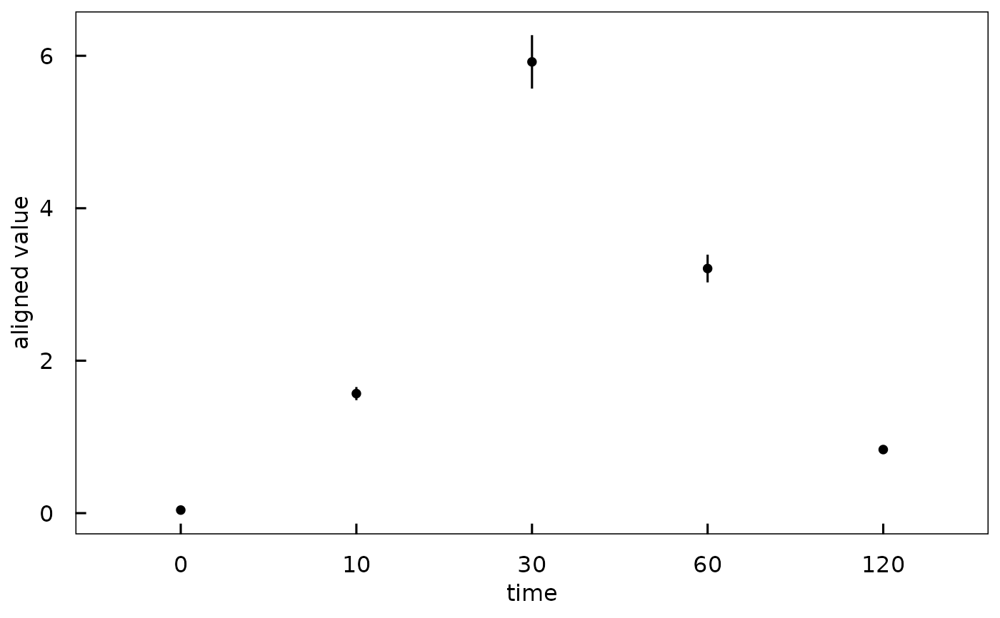

Builds the model of an alignment: readings of several experiments (gels,
plates, runs) that measure the same biological values up to experiment
specific factors, written as a free expression per reading as in blotIt.
align() fits it.
Every symbol of the expressions is a linear predictor over the columns of
data, set by the formulas of the roles in the coding of
stats::model.matrix() with treatment contrasts, as in insert() with
effect formulas: yi ~ target * time gives one value per combination of
target and time, sj ~ gel + target additive effects. A column gives one
level per value, numeric or not; I(dose) enters a numeric column as a
covariate with one slope. Random terms, (1 | gel), (1 + dose | p | gel)
and gr(gel, dist = spikeSlab()), add random effects per group as in
randomEffects(). trafo sets the scale of a symbol, "sj <- 10^sj": the
predictor is then on the log10 scale.
Values and scales share a common factor. As in blotIt, the experiments that
share biological values form blocks, and in each block the mean of the
predictors of the first biological symbol over the values of that symbol is
held at 0, by a
residual of weight 1000: the geometric mean of the values is 1 for
"yi <- exp(yi)" or "yi <- 2^yi", the mean of a symbol without trafo,
a log scale or an offset, is 0.
Absolute readings, on the scale the values are wanted on, such as
concentrations in nM by targeted mass spectrometry, are marked in a logical
column absolute. Their prediction is the expression absolute in the
biological symbols and data columns, so they depend on no scaling
parameter; the scaling formulas are coded over the other readings, and
their columns may be NA in absolute rows. A block that holds absolute
readings is not normalized: the values in it and the experiments connected to
them come out in the units of absolute.
Arguments
- data
data.frame with a column
value, the readings, and the columns named in the formulas and expressions. An optional columnlloqholds the lower limit of quantification of each reading (NAfor none); a reading with a limit andvalue <= lloqorvalueNAis censored (M3). A reading without a limit whose value is not finite is dropped with a warning. An optional logical columnabsolutemarks the absolute readings.- model
Expression of the prediction of a relative reading in the symbols of the formulas and data columns (covariates), e.g.
"yi * sj + bj".- errmodel
Expression of the standard deviation of a relative reading;
predictionstands for the prediction of the reading, e.g."sqrt(sigmaA^2 + (sigmaR * prediction)^2)".- biological, scaling, error
Formulas, or lists of formulas, with one or more symbols on the left,
sj + bj ~ gel, and their predictor on the right; all three are required,error = NULLfor an error model without symbols, a known standard deviation.biologicalnames the values that are reported. Random terms group by a column or a combination of columns,(1 | gel:lane); terms of several groupings, nested or crossed, are normal and integrated per connected component, seeem().- absolute
Expression of the prediction of an absolute reading in the biological symbols, on the scale their
trafogives them, and data columns, e.g."yi + log2(1000)"for readings in pM of values in nM.NULL(default) is the first biological symbol. A scaling symbol in it is an error.- trafo
Character vector of
"symbol <- expression", the scale of a symbol in the predictor of that symbol, e.g.c("yi <- 10^yi", "sj <- 10^sj"). Symbols not named are their predictor.- technical
Names of the columns of
datathat tell technical replicates apart, such as the lanes of one sample on a gel. Readings that agree in all other columns butvalueandlloqare one sample and are replaced by their mean before the alignment. The mean is geometric, taken on the log scale, for an error model inprediction(relative errors), and arithmetic otherwise, as for readings already on a log scale. A sample with censored readings is censored at the mean of the sample readings with the limits in place of the censored ones.NULL(default): every reading is a sample.- distribution
"normal"(default) or"t"(Student-t,normT()).- df
Degrees of freedom for
distribution = "t".- prior
Optional prior of parameters on their predictor scale, a
constraintL2()thatalign()adds to the objective. The log standard deviation of the normal random effect of a symbolswithout correlation isomega_s_s, e.g.constraintL2(mu = c(omega_bj_bj = 0), sigma = 0.3).- x
An
alignmentmodel.- ...
Ignored.
Value
Object of class alignmentmodel: the data, one row per sample
with technical, the design of every symbol, the compiled expressions,
the prior and the normalization: the block of every reading and per
block the coefficients of the mean.
References
Kemmer, S., Bang, S., Rosenblatt, M., Timmer, J. and Kaschek, D. (2022). BlotIt: Optimal alignment of Western blot and qPCR experiments. PLOS ONE 17(8), e0264295. doi:10.1371/journal.pone.0264295
Examples
## Five time points on six gels, each gel with a separate scale and an additive background
set.seed(1)
d <- expand.grid(time = c("0", "10", "30", "60", "120"), gel = paste0("G", 1:6),
stringsAsFactors = FALSE)
truth <- c(0.02, 1, 4, 2, 0.5)[match(d$time, c("0", "10", "30", "60", "120"))]
d$value <- (rlnorm(6, 7, 0.5)[match(d$gel, unique(d$gel))] * truth + 50) * rlnorm(nrow(d), 0, 0.1)
# \donttest{
old <- options(dMod2.outdir = tempdir())
## every symbol positive, on the log scale of the predictor; one value per time point,
## one scale per gel
logs <- c("yi <- exp(yi)", "sj <- exp(sj)", "bj <- exp(bj)", "sigmaR <- exp(sigmaR)")
m <- alignmentModel(d, model = "yi * sj + bj", errmodel = "sigmaR * prediction",
biological = yi ~ time, scaling = sj ~ gel, error = bj + sigmaR ~ 1,
trafo = logs)
## a background varying between gels: a list of formulas for one role
m2 <- alignmentModel(d, model = "yi * sj + bj", errmodel = "sigmaR * prediction",
biological = yi ~ time, scaling = list(sj ~ gel, bj ~ 1 + (1 | gel)),
error = sigmaR ~ 1, trafo = logs)
m
#> alignmentModel: 30 readings, model yi * sj + bj, error sigmaR * prediction
#> yi biological 5 parameters, yi = exp(yi)
#> sj scaling 6 parameters, sj = exp(sj)
#> bj error 1 parameter, bj = exp(bj)
#> sigmaR error 1 parameter, sigmaR = exp(sigmaR)
#> mean of yi normalized in 1 block of experiments
m2
#> alignmentModel: 30 readings, model yi * sj + bj, error sigmaR * prediction
#> yi biological 5 parameters, yi = exp(yi)
#> sj scaling 6 parameters, sj = exp(sj)
#> bj scaling 1 parameter, bj = exp(bj), random over gel
#> sigmaR error 1 parameter, sigmaR = exp(sigmaR)
#> mean of yi normalized in 1 block of experiments
fit <- align(m, fits = 4)
fit
#> alignment: 30 readings, 5 biological values, 12 parameters
#> restricted likelihood (REML, 2 rounds): -2 log L 389.06, AIC 413.06
#> maximum likelihood fits, REML from the best: -2 log L 329.79 329.79 329.79 329.79
fit$aligned
#> time symbol estimate se value sigma
#> 1 0 yi -3.2127997 0.18302237 0.04024378 0.007365512
#> 2 10 yi 0.4499769 0.05497631 1.56827596 0.086218023
#> 3 30 yi 1.7783403 0.05924187 5.92002292 0.350713229
#> 4 60 yi 1.1659908 0.05670480 3.20910085 0.181971415
#> 5 120 yi -0.1815083 0.05135481 0.83401135 0.042830490
plotAligned(fit)

options(old)
# }